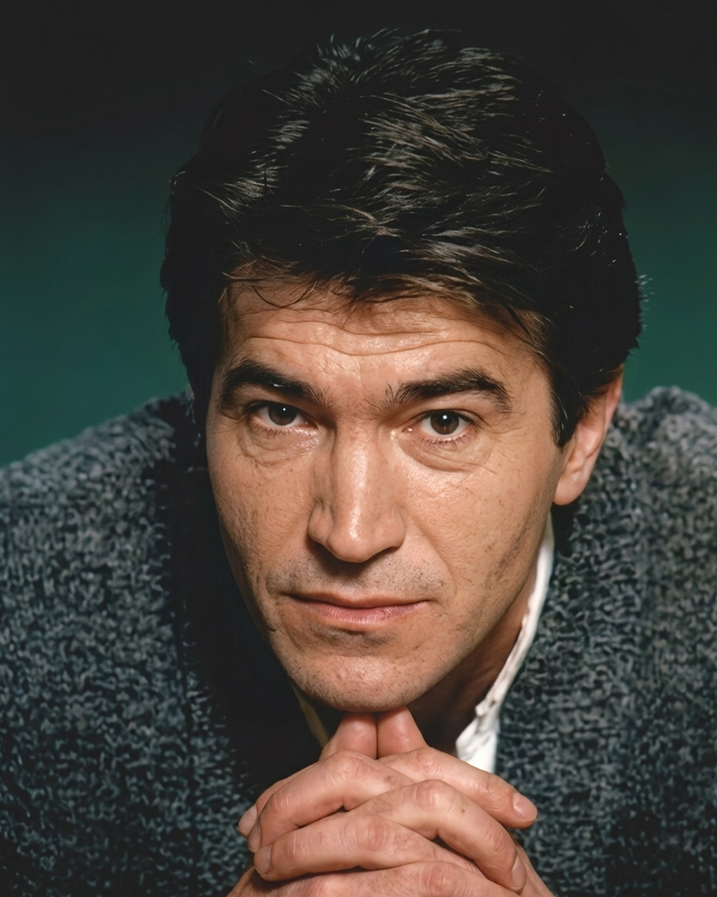

In May, during a public session of the Macedonian Radio Television Program Council, the broadcaster’s director general, Zoran Ristoski, announced that Macedonia would send a representative to the Eurovision Song Contest in 2027. The contest will be held in neighboring Bulgaria, making the return feel almost geographically ordained: after four consecutive years away, Macedonia would not have to travel far to re-enter Europe’s annual pageant of songs, lights, national feeling, and exquisitely tabulated disappointment. MRT said it expected support from the European Broadcasting Union and a more favorable arrangement for its return. No performer or song had yet been named. There was only the commitment to appear.
A little more than five weeks later, Vlado Janevski died in Skopje, after a short illness, at the age of sixty-five. Janevski had been a singer, composer, lyricist, multi-instrumentalist, reluctant national symbol, and, since one evening in Birmingham in 1998, the answer to a permanent Macedonian trivia question: Who was first? He would not live to see the country’s planned return, but the announcement made his story newly resonant. Before Macedonia could go back to Eurovision, it was worth remembering how it had arrived there in the first place.
The answer begins not in Birmingham but with an absence.
In 1996, four years after independence, Macedonia selected Kaliopi to perform “Samo ti.” The country was preparing to make its Eurovision début, but that year the European Broadcasting Union imposed an audio-only prequalification round to reduce the number of entries. The song did not advance. Macedonia had chosen a representative, recorded an entry, and approached the threshold of the contest, only to disappear before the television cameras were turned on. It was a début that had technically begun and publicly never happened.
That thwarted attempt gave the selection of 1998 an unusual weight. The next singer would not simply be competing for a respectable score. He would be asked to accomplish the basic act of national appearance—to stand on a stage beneath the country’s contested international designation and establish, before millions of viewers, that Macedonia was there.
Janevski was an unsurprising person on whom to place that burden. Born in Skopje in 1960, he studied English language and literature and played piano, guitar, and drums. Before becoming known as a solo balladeer, he passed through a succession of bands—Tost Sendvich, Bon Ton, Fotomodel, and Lastovica—whose names map an apprenticeship in the musical culture of late Yugoslavia. He had learned pop music as ensemble work: rehearsals, arrangements, festivals, compromises, the ability to make feeling legible within the length of a song.
His first encounter with the Eurovision apparatus came before Macedonia had its own place inside it. In 1992, appearing with Music Box at Jugovizija, the Yugoslav selection contest, Janevski performed “Hiljadu snova” and finished eleventh in a field of twenty. Jugovizija belonged to an older cultural system, one in which a singer from Skopje could enter a federal competition whose winner would be dispatched to represent Yugoslavia. Six years later, Janevski would take part in the same ritual under radically altered conditions. The federation was gone. The festival circuit remained. What had once been a route through Yugoslavia had become a means for Macedonia to present itself to Europe.
By then, Janevski’s domestic position was secure. His début album, Parče Duša, appeared in 1993. The following year, he won Makfest with “Eden baknež,” and released “Domašna rabota (Odličen 5)” with Igor Džambazov. In 1996 came Daleku E Neboto and the compilation Sé Najdobro. Promotional material supplied by MKRTV before Eurovision described him as Macedonia’s most popular pop artist of the decade and claimed that he had been voted pop singer of the year in 1994, 1995, and 1996. Such language was not an independently audited measurement of national taste. It was broadcaster rhetoric. But broadcaster rhetoric has its own documentary value: it tells us how MRT wanted Janevski to be understood—as established, trustworthy, and recognizably Macedonian without being provincial.
He was not an unknown requiring Eurovision to invent him. He was the sort of artist institutions choose when they want risk to appear dignified.
On March 7, 1998, twenty songs were performed at Universal Hall in Skopje. The selection process had three stages. MRT first issued an anonymous call for compositions. A special jury then reduced the submissions to twenty finalists. The winner was left to a public televote. It was a structure that combined official supervision with popular consent: the broadcaster determined what could be chosen, and the audience determined which of those choices would represent it.
Seen from a distance of nearly three decades, the line-up resembles a compressed history of Macedonian popular music. Kaliopi was there, two years after the aborted 1996 attempt. Karolina Gočeva, then still near the beginning of her career, was there. So were Risto Samardžiev, Tanja Carovska, Suzana Spasovska, Dule & Koki, and a young Toše Proeski performing with Megatim Plus. Many of the people who would define Macedonian music over the next decade were gathered inside one hall, competing to become the country’s first visible Eurovision representative.